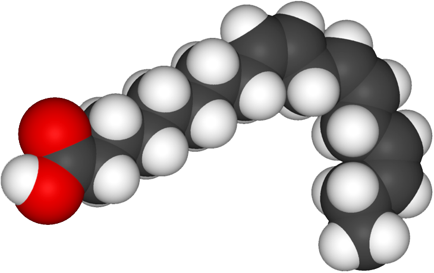
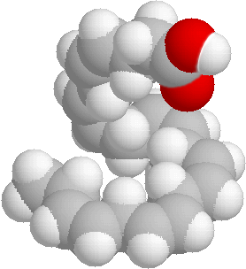

Vitamin Ω
There are three types of omega-3 fatty acids: ALA (found in plant oils), EPA, and DHA.
Alpha-Linolenic acid (ALA) - C18H30O2

Eicosapentaenoic acid (EPA) - C20H30O2
Docosahexaenoic acid (DHA) - C22H32O2
Olive oil, canola oil, almonds, flax seeds and walnuts are sources of AHA omega-3.
Because ALA conversion to DHA is severely limited, foods containing ALA should not be viewed as a reliable source of DHA.
Fatty fish that swim in cold waters (such as cod, salmon, sardines, mackerel, herring, and tuna) provide high sources of both DHA and EPA omega-3 fatty acids.
The DHA found in fish is actually the result of marine algae consumption. The DHA in algal-oil capsules and the DHA in cooked salmon are nutritionally the same.